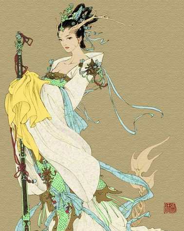

此花开尽更无花
桃花源
- 初遇
- 怡然自乐
- 离别
晋太元中，武陵人捕鱼为业。
缘溪行，忘路之远近。
忽逢桃花林，夹岸数百步，中无杂树，
芳草鲜美，落英缤纷，渔人甚异之。
复前行，欲穷其林。
缘溪行，忘路之远近。
忽逢桃花林，夹岸数百步，中无杂树，
芳草鲜美，落英缤纷，渔人甚异之。
复前行，欲穷其林。
林尽水源，便得一山，山有小口，仿佛若有光。
便舍船，从口入。初极狭，才通人。
复行数十步，豁然开朗。
土地平旷，屋舍俨然，有良田美池桑竹之属。
阡陌交通，鸡犬相闻。
其中往来种作，男女衣着，悉如外人。
黄发垂髫，并怡然自乐。
见渔人，乃大惊，问所从来。
具答之。便要还家，设酒杀鸡作食。
村中闻有此人，咸来问讯。
自云先世避秦时乱，率妻子邑人来此绝境，
不复出焉，遂与外人间隔。
问今是何世，乃不知有汉，无论魏晋。
此人一一为具言所闻，皆叹惋。
余人各复延至其家，皆出酒食。
停数日，辞去。此中人语云："不足为外人道也。"
便舍船，从口入。初极狭，才通人。
复行数十步，豁然开朗。
土地平旷，屋舍俨然，有良田美池桑竹之属。
阡陌交通，鸡犬相闻。
其中往来种作，男女衣着，悉如外人。
黄发垂髫，并怡然自乐。
见渔人，乃大惊，问所从来。
具答之。便要还家，设酒杀鸡作食。
村中闻有此人，咸来问讯。
自云先世避秦时乱，率妻子邑人来此绝境，
不复出焉，遂与外人间隔。
问今是何世，乃不知有汉，无论魏晋。
此人一一为具言所闻，皆叹惋。
余人各复延至其家，皆出酒食。
停数日，辞去。此中人语云："不足为外人道也。"
既出，得其船，便扶向路，处处志之。
及郡下，诣太守，说如此。
太守即遣人随其往，寻向所志，遂迷，不复得路。
南阳刘子骥，高尚士也，闻之，欣然规往。
未果，寻病终，后遂无问津者。
及郡下，诣太守，说如此。
太守即遣人随其往，寻向所志，遂迷，不复得路。
南阳刘子骥，高尚士也，闻之，欣然规往。
未果，寻病终，后遂无问津者。
谨此以记桃花源游
桃花坞里桃花庵，桃花庵下桃花仙。
桃花仙人种桃树，又摘桃花换酒钱。
酒醒只在花前坐，酒醉还来花下眠。
酒醉酒醒日复日，花开花落年复年。
但愿老死花酒间，不愿鞠躬车马前。
车尘马足富者趣，酒盏花枝贫者缘。
若将富贵比贫贱，一在平地一在天。
若将花酒比车马，他得驱驰我得闲。
别人笑我忒疯癫，我笑他人看不穿。
不见五陵豪杰墓，无花无酒锄作田。
谨此以记唐寅
言笑晏晏

谨此以记花无百艳只为春